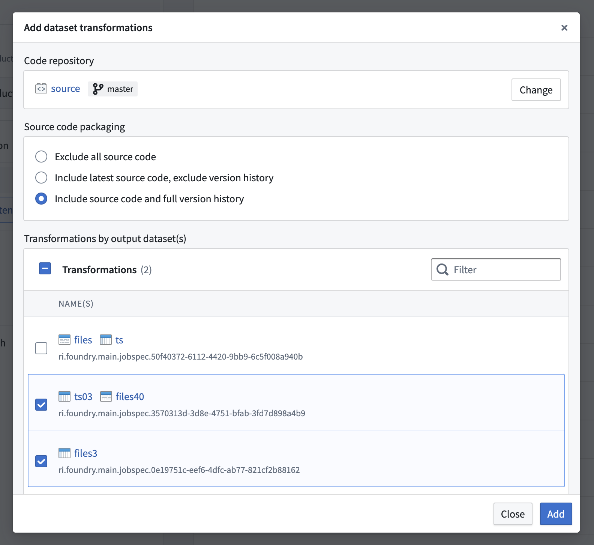

Use Foundry DevOps to include your dataset transformations in Marketplace products for other users to install and reuse. Learn how to create your first product.
When packaging a dataset transformation (along with its producing Code Repository), all required dependencies are stored as part of the product; this guarantees that the transformation is self-contained and can run successfully anywhere. Repositories can bring Maven, PyPI, and Conda dependencies.
Python, Java, and SQL transformations are supported. Transformations must be produced from a repository with a recent template, otherwise packaging errors may occur. To debug, upgrade your repository in the Code Repositories application. If a transformation can be successfully packaged, it will not cause any installation or runtime errors.
:::callout{theme="warning"} The dataset you provide as an input at the time of installation must have column names and variable types that are identical to the source dataset.
This is because all dataset columns from the source input datasets (for example, an airplane dataset used as an input to a dataset transformation, which is then included in a Marketplace product) will be required inputs when installing, whether or not the columns are referenced in the dataset transformation.
:::
Supported features include:
To add a dataset transformation to a product, first create a product, then add outputs. Choose the Add files option to navigate to the dataset transformation from within the Compass filesystem and add it to your product.
In some cases, one transformation may produce multiple output datasets. If this is the case, all produced datasets need to be included in the product.

There are three ways to package a repository.